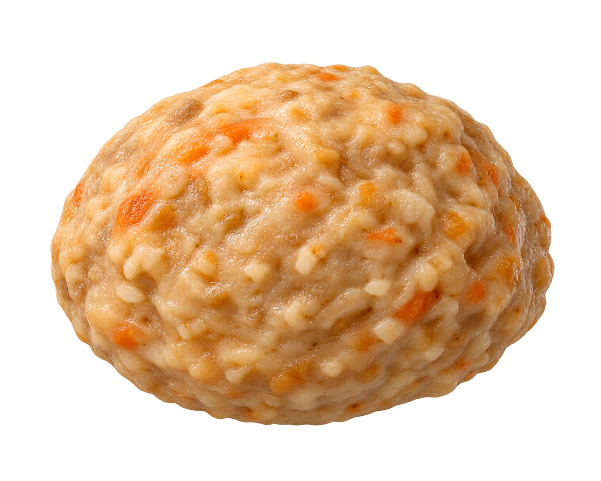

음식의 현재 위치
음식은 지금 입에 있어요.
위치 표식을 보고, 오른쪽에서 이곳의 변화를 관찰해요.
기관 안을 더 가까이
입 안에서 시작되는 소화
어디서?
어떤 효소가?
무엇을?
무엇으로?

녹말·당단백질지방효소모양·색·크기는 학습용 모형
01
관찰 단계
입 · 1 / 5단계다음 단계를 누르면 진행해요.
한 번 누르면 한 단계만 보여 준 뒤 멈춰요.
음식의 현재 위치
위치 표식을 보고, 오른쪽에서 이곳의 변화를 관찰해요.
기관 안을 더 가까이
무엇으로?
